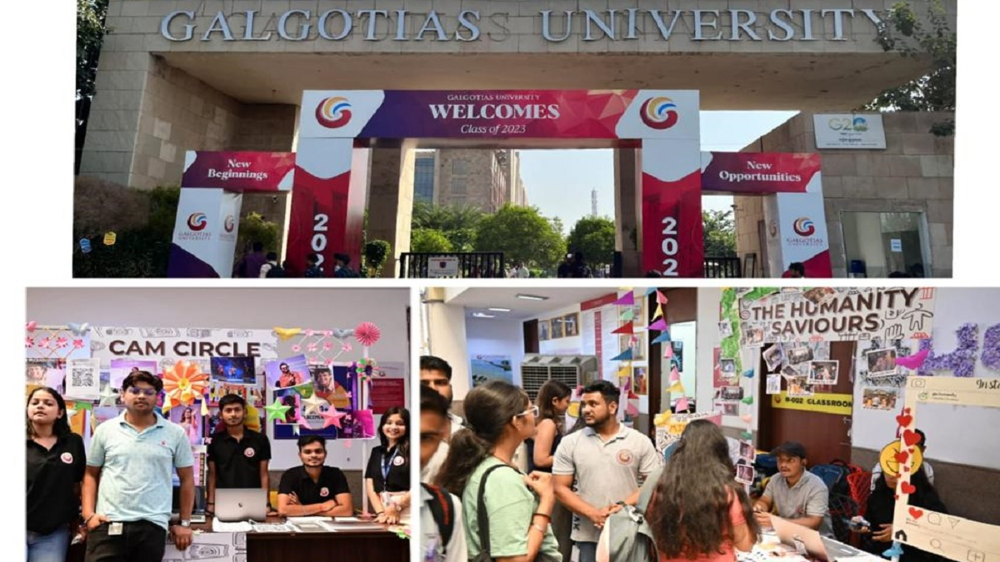
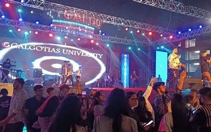

Welcome to My Blog
Check out my latest blog posts below.
Galgotias University Active Learning Ecosystem
It captures a modern and collaborative learning environment where students are engaged in practical, hands-on work using high-end Apple computers. The workspace is designed to promote innovation, creativity, and interactive learning.
Key Highlights
State-of-the-Art Infrastructure:
The lab is equipped with Apple iMacs, providing students with industry-standard tools for design, development, and programming.
A well-lit, spacious, and aesthetically pleasing workspace enhances productivity.
Active Learning and Collaboration:
Students are actively working on projects, including UI/UX design, software development, and coding.
Small teams and individuals are engaged in problem-solving, demonstrating a student-centered learning approach.
Faculty and Industry Interaction:
A group of faculty members and dignitaries can be seen interacting, possibly discussing research collaborations, industry tie-ups, or project evaluations.
Such interactions foster real-world exposure and industry readiness among students.
Unifest 24 - Galgotias University's Vintage Cultural Festival
Event Date: 06th April 2024
Galgotias Unifest 2K25
Galgotias University hosted the biggest cultural festival in Northem India, themed "Vintage" this year. The two-day extravaganza, held on April 5th and 6th, saw enthusiastic participation from various colleges across more than 20 events organized by the University's societies and clubs Day 1-April 5th The first day was packed with a diverse array of events like debates.poetry competitions (Jazbaat-e-Bayaan), dance battles (Rhythm Rumble), fashion shows (Walk Vista), business contests (The Antique Venture), theatrical performances (Monoact, Nukkad Natak), gaming tournaments (BGMI Battle), music competitions (Swarotsav, Mode Maestro), and fun activities like doodling and food challenges (Munchathon) - all with a vintage twist. The highlight was the electrifying performance by renowned Bollywood playback singer Javed Ali, who enthralled the crowd with his meltuous voice and popular hits like "Kun Faya Kun" and "Jashn-E-Bahaara" Day 2-April 6th The second day continued the festivities with more exciting events and stalls serving food and treats in keeping with the vintage theme. However, the main attraction was the eagerly awaited celebrity performance by versatile singer-composer Akhil Sachdeva. Sachdeva's performance was a massive hit, with the crowd dancing to his popular numbers like "Humsafar" and "Nazm Nazm His energy and stage presence left the audience wanting more The festival concluded on a high note, with Unifest24 being hailed as the biggest success of the student council, truly capturing the essence of vintage charm.
My First Blog Post
Published on: March 27, 2019
This is the full content of my first blog post. Here you can write a detailed article...
About This Blog
Welcome to my blog! This is a place where I share my thoughts, experiences, and interesting stories.
Leave a Comment
John Doe: Great post! Keep it up